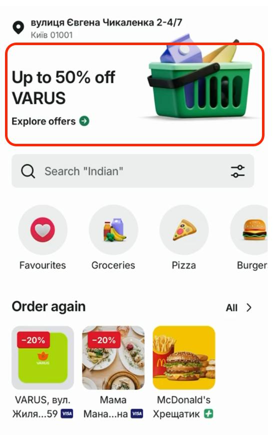
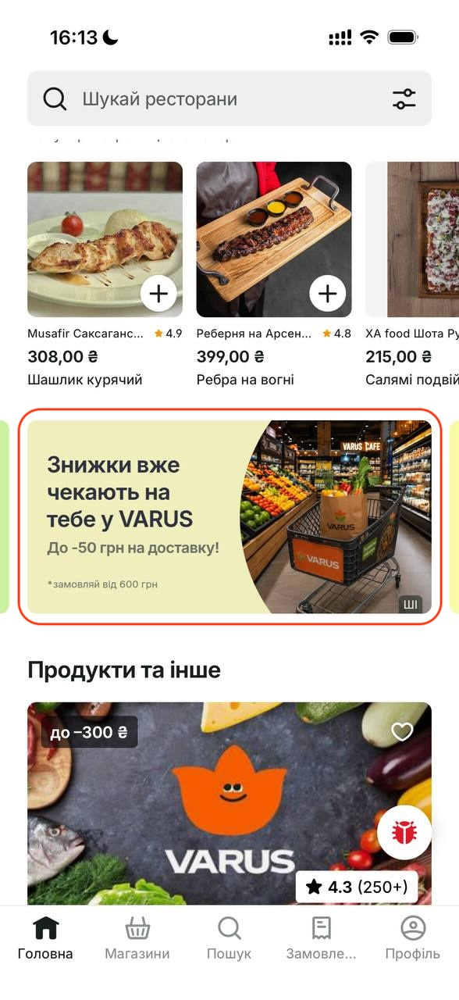
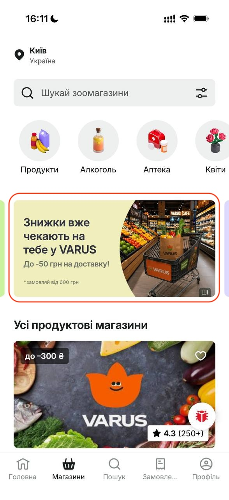

План на найближчі місяці і те, що вже профінансовано.
1. Глобальні івенти
Участь VARUS у сезонних кампаніях Bolt.
Від VARUSУнікальна пропозиція для клієнта і окрема категорія в асортименті на час івенту.
Від BoltБанери в застосунку, включно з Hero Banner, email-розсилки і пуші клієнтам.
Івент
Дати
Halloween
26.10 – 01.11
Black Friday
23.11 – 29.11
Christmas
07.12 – 27.12
New Year
28.12 – 03.01
Дати з розділу планування маркетингу у MBR. Hero Banner на 21–25.10 описаний окремо нижче.
2. Регулярні банери лише про VARUS
Постійне розміщення у вкладках Головна та Магазини. Креатив рекламує тільки VARUS, без спільного пакета з іншими мережами.
3. Hero Banner на Головній · 21–25.10
Один слот максимального охоплення перед Halloween. Умова участі та сама: окрема пропозиція і добірка товарів.
4. Знижки на доставку
Розмір стелі і тривалість залежать від кофінансування VARUS. Без участі партнера Bolt не тримає знижку на доставку постійно: це вже б’є по прибутковості. Пропозиції на чорну п’ятницю і різдвяне вікно — у окремій презентації.
5. Другий раунд кешбеку · листопад
Повтор кампанії після вересневого тесту. Перший раунд: 20% кешбеку, стеля 200 грн, мінімальний чек 600 грн, один раз на клієнта, фінансував Bolt. Дати листопада узгодимо окремо. Цільову аудиторію для 2-го раунду кампанії можна розширити при наявності кофінансування зі сторони VARUS.
6. Підписка Bolt+
Програму підключили 10.09.2026 за рахунок Bolt. Користувачі підписки отримують більш вигідні знижки на доставку під час замовлень у VARUS.
Банери
У серпні банери вже працювали на VARUS. Переходи з банера і Hero Banner разом: 3 029, у 9,1 раза більше, ніж у липні. З них 285 замовлень. У червні було 13 переходів, у липні — 333.
Формат
Переходи
Додали товар
Замовлення
GMV сесій, €
Regular Banner
1 578
552
174
2 908
Hero Banner
1 451
266
111
2 099
Разом · серпень
3 029
818
285
5 007
GMV сесій — сума кошиків до знижки в сесіях із переходом, не доставлений GMV товарів. Джерело: MBR, банери.

Hero Banner

Regular Banner · Головна

Regular Banner · Магазини
Знижки на доставку, які вже були
Чотири завершені формати. Суми без ПДВ. Рядок до 50 грн об’єднує звичайні тижні і тиждень partnership 10–16 серпня.
20% кешбеку від чека, стеля 200 грн на клієнта, мінімальний чек 600 грн, одне використання. Аудиторія — активні клієнти Bolt Food, які ще не замовляли у VARUS. Фінансував Bolt.
Показник
Факт
К-сть замовлень по даній кампанії
648
Інвестиція Bolt
62 091 грн
Середній чек учасників
996 грн
У кампанії було 648 замовлень, по одному на клієнта. Звичайний вересневий чек VARUS — близько 720 грн.
Bolt+ з 10 вересня
Підписку підключили за рахунок Bolt. З 10 вересня по 13 жовтня знижку Bolt+ отримали 1 638 доставлених замовлень — 11,6% від 14 137 доставлених за цей період. Витрати на цю знижку — 87 387 грн, частка VARUS у них 0%.
3rd party маркетинг
Окремі кампанії банків і Visa на замовлення VARUS. Це знижка на товари для клієнтів конкретного банку, не знижка на доставку мережі. Платив Bolt.
Кампанія
Період
Замовлення
Інвестиція Bolt, грн
Visa · PrivatBank, 50% на товари
10.07 – 15.08
774
93 266
Visa · ПУМБ
01.09 – 29.09
201
23 922
Visa · А-Банк
08.08 – 13.10
308
13 339
Ukrsibbank
08.08 – 13.10
130
9 351
Разом
1 413
139 878
Частка кожної ініціативи
Разом відомих витрат — 1 132 010 грн.
Ініціатива
Сума, грн
Частка
Знижки на доставку
842 654
74,4%
3rd party маркетинг
139 878
12,4%
Bolt+
87 387
7,7%
Кешбек
62 091
5,5%
Знижка на доставку — найбільша і найчастіша для клієнта: 19 805 замовлень проти 1 413 у банківських кампаніях, 1 638 у Bolt+ і 648 у кешбеку. Її видно в ціні майже кожного другого замовлення, коли вона увімкнена. У червні її майже не було, і це був найслабший повний місяць за темпом. Банери, кешбек і Bolt+ додають контакт і окремі аудиторії, але не замінюють ціну доставки. Тому знижку варто продовжувати на ключові періоди, уже з кофінансуванням: Bolt не закриває її самостійно на постійній основі.
Втрати через операційні процеси
Failed — замовлення, яке не дійшло до доставки. Співвідношення нижче — кількість Failed на кожне доставлене замовлення.
Місяць
Delivered
Failed
Failed / Delivered
Втрачений GMV товарів, грн
Травень
6 168
566
9,2%
267 048
Червень
7 479
460
6,2%
282 112
Липень
9 844
490
5,0%
353 677
Серпень
14 519
1 651
11,4%
1 448 972
Вересень
12 080
2 089
17,3%
1 760 135
Травень–вересень
50 090
5 256
10,5%
4 111 944
Маркетинг приводить клієнта, який уже обрав VARUS. Скасування після цього — втрачений продаж: за травень–вересень це 5 256 замовлень і 4,1 млн грн вартості товарів. У липні відношення було 5,0%, у вересні — 17,3%, хоча промо в ці місяці якраз працювало. Поки замовлення не збирається і не видається вчасно, додатковий трафік частково згорає. Налагодження прийняття, залишків, замін і часу видачі перетворює той самий попит на доставлені замовлення. Це органічне зростання без нового бюджету на охоплення.